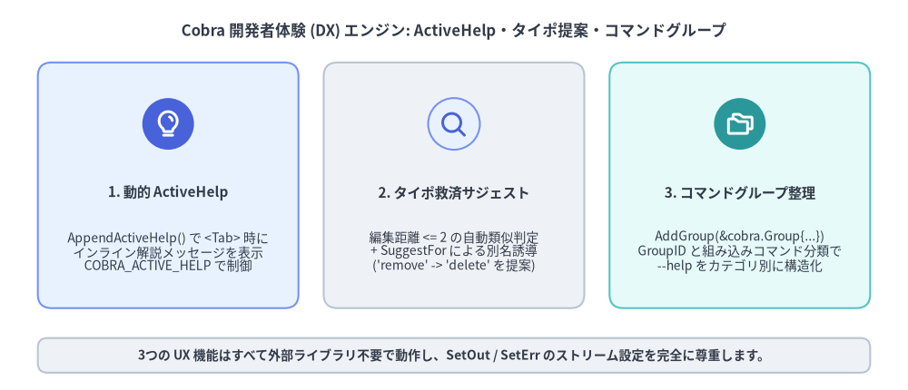
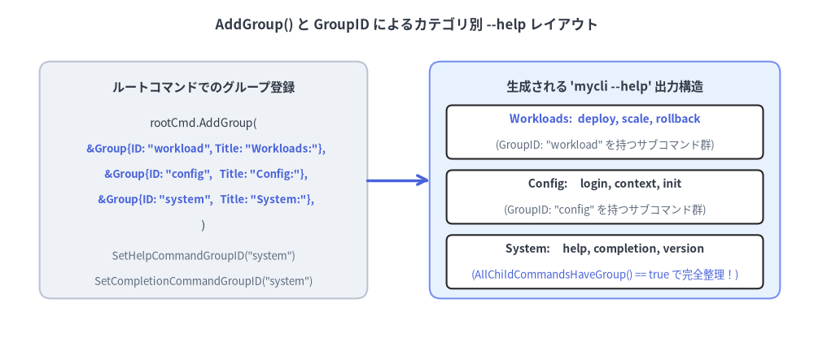

ActiveHelp・タイポ提案・ヘルプテンプレート
優れた CLI の開発者体験（DX）は、単に処理が速いだけではありません。入力中に次の操作をナビゲートし、コマンド名のタイポを賢く救済し、数十個のサブコマンドを一目で把握できるカテゴリ別に整理して表示することが求められます。Cobra v1.10.2 はこれらを実現する3つの UX サブシステム（ActiveHelp、レーベンシュタイン距離＋明示的シノニム提案、コマンドグループ cobra.Group）を標準搭載しています。

Source Code
from drawlib.canvas import save, setup
from drawlib.icons import phosphor
from drawlib.shapes import rectangle
from drawlib.smartarts import CardList
from drawlib.styles import Styles
from drawlib.text import text
setup(width=144, height=62)
text(
(72, 57),
"Cobra 開発者体験 (DX) エンジン: ActiveHelp・タイポ提案・コマンドグループ",
style=Styles.DarkBold.patch(text_size=12.0),
)
cards = CardList(
style=Styles.Neutral,
text_style=Styles.DarkBold.patch(text_size=11.0),
description_style=Styles.Dark.patch(text_size=10.0),
badge_shape="circle",
badge_style=Styles.PrimaryNeutral,
icon_style=Styles.PrimaryBold,
direction="horizontal",
show_arrows=False,
spacing=4.0,
)
cards.add(
"1. 動的 ActiveHelp",
"AppendActiveHelp() で <Tab> 時に\nインライン解説メッセージを表示\nCOBRA_ACTIVE_HELP で制御",
icon=phosphor.lightbulb,
style=Styles.PrimaryNeutral,
badge_style=Styles.PrimaryFlat,
icon_style=Styles.WhiteBold,
)
cards.add(
"2. タイポ救済サジェスト",
"編集距離 <= 2 の自動類似判定\n+ SuggestFor による別名誘導\n('remove' -> 'delete' を提案)",
icon=phosphor.magnifying_glass,
style=Styles.Neutral,
)
cards.add(
"3. コマンドグループ整理",
"AddGroup(&cobra.Group{...})\nGroupID と組み込みコマンド分類で\n--help をカテゴリ別に構造化",
icon=phosphor.folders,
style=Styles.SecondaryNeutral,
badge_style=Styles.SecondaryFlat,
icon_style=Styles.WhiteBold,
)
cards.draw(xy=(6, 13), width=132, height=39)
rectangle((72, 5.5), width=132, height=5.5, style=Styles.Neutral.patch(shape_r=1.5))
text(
(72, 5.5),
"3つの UX 機能はすべて外部ライブラリ不要で動作し、SetOut / SetErr のストリーム設定を完全に尊重します。",
style=Styles.DarkBold.patch(text_size=10.0),
)
save()
1. ActiveHelp による文脈に応じたインラインヒント（active_help.go）
通常のタブ補完はコマンドラインに挿入する「値」を提案しますが、ActiveHelp は <Tab> を押した際にターミナル上へ「選択されないガイドメッセージ（ヒント行）」を直接表示する機能です（Bash 4.4 以降、Zsh、Fish でサポートされています）。
AppendActiveHelp と GetActiveHelpConfig の仕組み
内部実装（active_help.go:23-60）では、cobra.AppendActiveHelp(compArray, msg) を呼ぶと補完スライスに "_activeHelp_ " プレフィックス付きの文字列が追加されます。シェル側の補完スクリプトがこのプレフィックスを検知し、補完候補リストとは別のガイド枠としてターミナルに描画します。
ユーザーは環境変数を使って ActiveHelp の有効・無効や詳細度を制御できます。
- グローバル無効化（
COBRA_ACTIVE_HELP=0）:export COBRA_ACTIVE_HELP=0が設定されている場合、cobra.GetActiveHelpConfig(cmd)はすべての Cobra 製 CLI で強制的に"0"を返します。 - CLI 固有の設定変数（
<PROGRAM>_ACTIVE_HELP）:COBRA_ACTIVE_HELPが"0"でない場合、ルートコマンド名を大文字化し英数字以外を_に置換した環境変数（例：my-cliならMY_CLI_ACTIVE_HELP）の値を返します。
cmd.ValidArgsFunction = func(
cmd *cobra.Command,
args []string,
toComplete string,
) ([]cobra.Completion, cobra.ShellCompDirective) {
var comps []cobra.Completion
cfg := cobra.GetActiveHelpConfig(cmd)
if len(args) == 0 {
if cfg != "0" {
comps = cobra.AppendActiveHelp(
comps,
"ヒント: デプロイ先の環境を選択してください（--dry-run で事前検証が可能です）",
)
}
comps = append(comps,
cobra.CompletionWithDesc("staging", "ステージング検証環境"),
cobra.CompletionWithDesc("prod", "本番環境"),
)
if cfg == "verbose" {
comps = cobra.AppendActiveHelp(
comps,
"注意: prod 環境へのデプロイには --ticket-id フラグによる承認番号が必要です",
)
}
return comps, cobra.ShellCompDirectiveNoFileComp
}
return nil, cobra.ShellCompDirectiveNoFileComp
}
2. レーベンシュタイン距離によるタイポ提案と SuggestFor（command.go）
ユーザーが未知のサブコマンド（または cobra.OnlyValidArgs で定義されていない位置引数）を入力した際、Cobra は大文字小文字を区別しないレーベンシュタイン編集距離（cobra.go:196-234 の ld() 関数）および前方一致を用いて自動的に類似候補を検索します。
cobra.Command のフィールド / メソッド |
デフォルト値 | 役割と挙動 |
|---|---|---|
DisableSuggestions |
false |
親コマンドで true に設定すると "Did you mean this?" の提案表示を無効化します。 |
SuggestionsMinimumDistance |
2 |
提案対象とする最大レーベンシュタイン距離（0 以下の場合はデフォルト 2 として動作）。 |
SuggestFor（[]string） |
nil |
編集距離に関わらず、指定した別名（他ツールの用語など）が入力された際にこのコマンドを提案します。 |
cmd.SuggestionsFor(typedName) |
メソッド | プログラムやカスタムエラーハンドラから typedName に対する提案リストを取得します。 |
SuggestFor で他ツールの手癖（マッスルメモリ）を救済する
レーベンシュタイン距離は mycli deply $\rightarrow$ deploy（編集距離 1）のような単純なタイプミスには有効ですが、実際のコマンド名が delete のときにユーザーが mycli remove や mycli destroy（編集距離 4 以上）と入力した場合には反応しません。Aliases を増やしてコマンド空間を汚す代わりに SuggestFor を設定すれば、正しいコマンド名へスマートに誘導できます。
deleteCmd := &cobra.Command{
Use: "delete <resource-id>",
Short: "クラスタリソースを完全に削除します",
// ユーザーが 'mycli remove' と入力すると以下を表示して誘導する:
// Error: unknown command "remove" for "mycli"
// Did you mean this?
// delete
SuggestFor: []string{"remove", "rm", "destroy", "erase"},
Args: cobra.ExactArgs(1),
RunE: runDelete,
}
3. コマンドグループ（cobra.Group）による --help の構造化
サブコマンド数が 6〜8 個を超えると、アルファベット順に並んだ単一の Available Commands: リストでは目的のコマンドを探しにくくなります。Cobra v1.10.2 では cmd.AddGroup(&cobra.Group{ID, Title}) とサブコマンド側の GroupID を使って、--help 出力を論理的なカテゴリ見出しに分割できます。

Source Code
from drawlib.canvas import save, setup
from drawlib.lines import line
from drawlib.shapes import rectangle
from drawlib.styles import Styles
from drawlib.text import text
setup(width=144, height=60)
text(
(72, 55.5),
"AddGroup() と GroupID によるカテゴリ別 --help レイアウト",
style=Styles.DarkBold.patch(text_size=12.0),
)
# Left: Root Command Registration
rectangle((36, 28), width=58, height=42, style=Styles.Neutral.patch(shape_r=2.0))
text((36, 44.5), "ルートコマンドでのグループ登録", style=Styles.DarkBold.patch(text_size=11.0))
text((36, 38.0), "rootCmd.AddGroup(", style=Styles.Dark.patch(text_size=10.0))
text((36, 33.5), " &Group{ID: \"workload\", Title: \"Workloads:\"},", style=Styles.PrimaryBold.patch(text_size=9.5))
text((36, 29.0), " &Group{ID: \"config\", Title: \"Config:\"},", style=Styles.PrimaryBold.patch(text_size=9.5))
text((36, 24.5), " &Group{ID: \"system\", Title: \"System:\"},", style=Styles.PrimaryBold.patch(text_size=9.5))
text((36, 20.0), ")", style=Styles.Dark.patch(text_size=10.0))
text((36, 14.5), "SetHelpCommandGroupID(\"system\")", style=Styles.Muted.patch(text_size=9.5))
text((36, 10.0), "SetCompletionCommandGroupID(\"system\")", style=Styles.Muted.patch(text_size=9.5))
# Right: Rendered Help Output
rectangle((107, 28), width=62, height=42, style=Styles.PrimaryNeutral.patch(shape_r=2.0))
text((107, 44.5), "生成される 'mycli --help' 出力構造", style=Styles.DarkBold.patch(text_size=11.0))
rectangle((107, 36.5), width=56, height=9.5, style=Styles.White.patch(shape_r=1.0))
text((107, 38.8), "Workloads: deploy, scale, rollback", style=Styles.PrimaryBold.patch(text_size=10.0))
text((107, 34.2), "(GroupID: \"workload\" を持つサブコマンド群)", style=Styles.Muted.patch(text_size=9.5))
rectangle((107, 25.0), width=56, height=9.5, style=Styles.White.patch(shape_r=1.0))
text((107, 27.3), "Config: login, context, init", style=Styles.DarkBold.patch(text_size=10.0))
text((107, 22.7), "(GroupID: \"config\" を持つサブコマンド群)", style=Styles.Muted.patch(text_size=9.5))
rectangle((107, 13.5), width=56, height=9.5, style=Styles.White.patch(shape_r=1.0))
text((107, 15.8), "System: help, completion, version", style=Styles.DarkBold.patch(text_size=10.0))
text((107, 11.2), "(AllChildCommandsHaveGroup() == true で完全整理！)", style=Styles.Primary.patch(text_size=9.5))
line((65, 28), (76, 28), arrow_head="->", style=Styles.PrimaryBold)
save()
組み込みコマンドのグループ統合と Additional Commands: の消去
デフォルトでは、自動生成される help と completion コマンドはグループ未所属となり、末尾に Additional Commands: という見出しで残ってしまいます。SetHelpCommandGroupID と SetCompletionCommandGroupID を使ってこれらもグループに所属させると、cmd.AllChildCommandsHaveGroup() が true となり、余分な Additional Commands: セクションが完全に消去されます。
func ConfigureCommandGroups(rootCmd *cobra.Command) {
// 1. 親コマンドに表示順でグループを登録
rootCmd.AddGroup(
&cobra.Group{ID: "workload", Title: "Workload Management Commands:"},
&cobra.Group{ID: "config", Title: "Configuration & Auth Commands:"},
&cobra.Group{ID: "system", Title: "System & Shell Utilities:"},
)
// 2. 自動生成される 'help' と 'completion' も "system" グループへ統合
rootCmd.SetHelpCommandGroupID("system")
rootCmd.SetCompletionCommandGroupID("system")
// 3. 各サブコマンドに GroupID を指定して追加
rootCmd.AddCommand(
&cobra.Command{Use: "deploy", Short: "ワークロードをデプロイ", GroupID: "workload", Run: noop},
&cobra.Command{Use: "login", Short: "CLI の認証情報を設定", GroupID: "config", Run: noop},
)
}
未登録
GroupIDのフェイルファスト検証（checkCommandGroups）:ExecuteC()の冒頭（command.go:1117）で、Cobra は全サブコマンドのGroupIDが親コマンドにAddGroupされているかを検査します。存在しないGroupIDが指定されている場合は即座にpanicするため、タイポによる表示漏れを単体テストで確実に検知できます。
カスタムヘルプテンプレート（SetUsageTemplate / AddTemplateFunc）
ヘルプ出力に独自のセクションや装飾を追加したい場合は、cobra.AddTemplateFunc(name, fn) でテンプレート関数を登録し、cmd.SetUsageTemplate(tmpl) でテンプレート文字列を上書きできます。
UsageTemplate()・HelpTemplate()・ErrPrefix()はすべて親コマンドから子孫コマンドへ自動的に継承されます。- なお、
text/templateによるリフレクションが Go リンカのデッドコード除去（バイナリサイズ最適化）に与える影響については、ドキュメント自動生成と配布 で詳しく解説します。